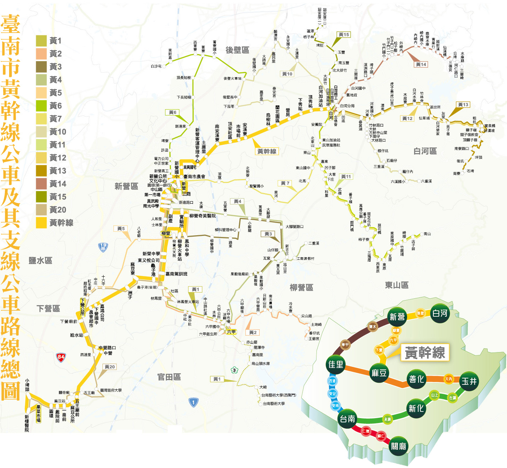

|
 |
| 黃幹線 |
白河 ─ 新營 ─ 麻豆 |
| 黃1 |
新營 ─ 柳營 ─ 六甲 |
| 黃2 |
新營 ─ 柳營 ─ 六甲 ─ 王爺宮 |
| 黃3 |
新營 ─ 柳營 ─ 果毅後 |
| 黃4 |
新營 ─ 二重溪 ─ 六甲 |
| 黃5 |
新營 ─ 紅毛厝 ─ 下營 |
| 黃6 |
新營 ─ 白沙屯 ─ 後壁火車站 |
| 黃7 |
新營 ─ 東山 ─ 青山 |
| 黃9 |
新營 ─ 高鐵嘉義站 |
| 黃10 |
後壁 ─ 白河 ─ 六重溪 |
| 黃11 |
白河 ─ 青山 |
| 黃11-1 |
白河 ─ 李子園 |
| 黃12 |
白河 ─ 關子嶺 |
| 黃12-1 |
白河 ─ 虎山里 |
| 黃13 |
白河 ─ 關子嶺 ─ 南寮 |
| 黃14 |
白河 ─ 三層崎 |
| 黃15 |
白河 ─ 詔安厝 |
| 黃20 |
麻豆 ─ 下營 ─ 紅毛厝 ─ 臺鐵林鳳營 |
關子嶺
假日公車 |
關子嶺 ─ 水火同源 ─ 關子嶺 |
|